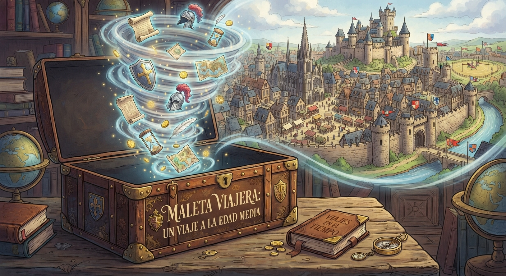

Introducción
¡Preparad las maletas, viajeros del tiempo, que...arrancamos!
Imaginad que podéis viajar más de mil años atrás. Os encontráis en una época de castillos, guerreros, mercados, grandes ciudades y personajes fascinantes.
Durante este viaje conoceremos a tres grandes protagonistas de nuestra historia: los visigodos, Al-Ándalus y los reinos cristianos. Descubriremos cómo vivían, cómo se organizaban y qué huella dejaron en nuestra sociedad.
Pero antes de comenzar, pensad...
Si pudierais vivir un día en la Edad Media, ¿Cómo os imagináis que sería vuestra vida? ¿En qué lugar os gustaría vivir y por qué?
